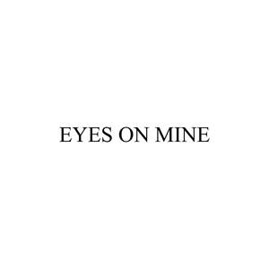
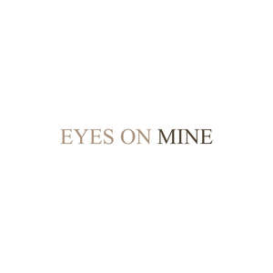

Trade Mark Journal No.2025/046 14 November 2025
UK00004286923 30 October 2025 (3,8,18,21,35,44)
Mark 1
Eyes on Mine
Mark 2

Mark 3

- Class 3
- Eyelashes; Eyelashes (False -); False eyelashes; Artificial eyelashes; Adhesives for false eyelashes, hair and nails; Cosmetics for eye-lashes; Eyebrow mascara; Hair mascara; Eyelashes (Cosmetic preparations for -); Cosmetic preparations for eyelashes; Eyelashes (Adhesives for affixing false -); Adhesives for affixing false eyelashes; Eyelash tint; Mascara; Eyelash dye; Adhesives for affixing artificial eyelashes; Eyebrows [false]; Cosmetic preparations for eye lashes; Self-adhesive false eyebrows; Long lash mascaras; Eyes make-up; Eyebrow cosmetics; Eyelid doubling makeup; Eyelid pencils; Eyeliner; Cosmetics for eye-brows; Hair cosmetics; Mascaras; Liners [cosmetics] for the eyes; Hair serums; Eye makeup; Eyelid shadow; Hair moisturisers; Hair moisturizers; Eye make-up; Eye-shadow; Colour cosmetics for the eyes; Adhesives for affixing false eyebrows; Eye concealers; Tints for the hair; Eye cosmetics; Eyebrow pencils; Pencils (Eyebrow -); Eyebrow gel; Lip makeup; Cosmetics for the use on the hair; Eye make-up removers; Eyebrow colors; Colouring lotions for the hair; Eyeliner pencils; Dyes for the hair; Hair dyes; Eye makeup remover; Cosmetic preparations for the hair and scalp; Eyes pencils; Skin make-up; Hair gel; False hair (Adhesives for affixing -); Hair wax; Beauty serums; Beauty care cosmetics; Beauty masks; Masks (Beauty -); Beauty gels; Beauty balm creams; Facial beauty masks; Beauty preparations for the hair; Beauty care preparations; Beauty tonics for application to the face; Beauty masks for hands; Beauty serums with anti-ageing properties; Natural cosmetics; Non-medicated beauty preparations; Natural makeup; Skincare cosmetics; Cosmetics; Skin care cosmetics; Facial creams [cosmetics]; Natural oils for cosmetic purposes; Hair care lotions [for cosmetic use]; Facial makeup; Organic cosmetics; Cosmetic products in the form of aerosols for skin care; Makeup; Make-up; Make-up remover; Make-up primer; Organic makeup; Make-up removers; Make-up primers; Make-up powder; Powder (Make-up -); Powder for make-up; Multifunctional makeup; Foundation make-up; Make-up foundation; Make-up pencils; Make-up for the face; Make-up for compacts; Make-up foundations; Make-up palettes containing cosmetics; Make-up removing lotions; Make-up kits; Make-up base; Make-up removing creams; Make-up preparations; Makeup setting sprays; Make-up removing gels; Make-up for the face and body; Facial concealer; Make-up preparations for the face and body; Make-up removing preparations; Hairstyling serums; Facial gels [cosmetics]; Hairstyling masks; Make-up removing milk; Make-up removing milks; Skin masks [cosmetics]; Lip cosmetics; Skin moisturizers used as cosmetics; Compacts containing make-up; Body and facial gels [cosmetics]; Lip stains [cosmetics]; Eyeshadow; Moisturisers [cosmetics]; Facial cleansers [cosmetic]; Facial moisturisers [cosmetic]; Lipstick; Eyeshadow palettes; Eye lotions; Cosmetic eye pencils; Eye creams; Cosmetics in the form of eye shadow; Cosmetic eye gels; Eye shadow; Eye gel; Eye shadows; Eye pencils; Eye cream; Eye wrinkle lotions; Gel eye masks; Eye liner; Eye gels; Eye stylers; Skin, eye and nail care preparations; Eye correction serum; Eye brightening correctors; Theatrical makeup; Gel eye patches for cosmetic purposes; Eye make up remover; Eye sticks; Cosmetic creams for firming skin around eyes; Under eye correctors; Chalk for make-up; Eye compresses for cosmetic purposes; Body and facial creams [cosmetics]; Colour cosmetics for the skin; Cosmetics for use on the skin; Fake blood being theatrical make-up; Eye care products, non-medicated; Hair care creams [for cosmetic use]; Facial creams [cosmetic]; Facial creams [for cosmetic use]; Facial cream [for cosmetic use]; Creams (Non-medicated -) for the eyes; Fragrance sachets for eye pillows; Cleansing products for the eyes; Face blusher; Lip tints; Cosmetic pencils for cheeks; Lip gloss palettes; Eyebrow powder; Face glitter; Face and body glitter; Eyeliners; Double eyelid tapes; Beauty soap.
- Class 8
- Eyelash curlers; Curlers (Eyelash -); Artificial eyelash tweezers; Electric eyelash curlers.
- Class 18
- Beauty cases; Beauty cases [not fitted]; Makeup bags; Make-up bags; Make-up boxes; Make-up cases.
- Class 21
- Eyelash brushes; Eyelash combs; Eyelash Separators; Mascara brushes; Eyebrow brushes; Eyeliner brushes; Hair combs; Eye make-up applicators; Make-up brushes; Lip brushes; Cosmetic, hygiene and beauty care utensils; Make-up sponges; Facial sponges for applying make-up; Makeup sponge holders; Applicator sticks for applying makeup; Applicators for applying eye make-up; Cosmetics brushes; Make-up removing appliances; Applicator sticks for applying make-up; Cosmetic brushes; Appliances for removing make-up, non-electric; Non-electric make-up removing appliances; Hair brushes; Skin cleansing brushes; Applicators for cosmetics; Make-up artist belts.
- Class 35
- Business management of wholesale and retail outlets; Business management of retail outlets; Retail store services in the field of clothing; Administration of the business affairs of retail stores; Online retail store services in relation to clothing; Online retail store services relating to clothing; Retail services in relation to jewellery; Retail services in relation to clothing; Retail services relating to jewelry; Online retail services relating to jewelry; Management of a retail enterprise for others; Online retail services for downloadable virtual clothing; Online retail services relating to clothing; Retail services connected with the sale of third-party pre-paid cards for the purchase of clothing; Online retail services relating to cosmetics; Retail services relating to clothing; Retail services in relation to fashion accessories; Business management of wholesale outlets; Retail services in relation to downloadable virtual clothing; Online retail store services relating to cosmetic and beauty products; Retail services in relation to clothing accessories; Mail order retail services for cosmetics; Retail shop window display arrangement services; Retail services connected with the sale of clothing and clothing accessories; Retail services in relation to hair products; Marketing research in the fields of cosmetics, perfumery and beauty products; Commercial information and advice services for consumers in the field of beauty products.
- Class 44
- Beauty salons; Salons (Beauty -); Beauty care; Beauty treatment; Beauty salon services; Salon services (Beauty -); Beauty consultation; Beauty counselling; Beauty consultancy; Beauty care services; Beauty treatment services; Beauty therapy treatments; Beauty treatment services especially for eyelashes; Beauty advisory services; Beauty consultancy services; Information relating to beauty care; Information relating to beauty; Advisory services relating to beauty care; Consultation services relating to beauty care; Advisory services relating to beauty; Consultancy services relating to beauty; Providing information relating to beauty salon services; Cosmetic make-up services; Hair salon services for women; Make-up services; Services of a make-up artist; Make-up application services; Eyelash perming services; Eyelash curling services; Eyelash tinting services; Beauty spa services; Beauty therapy services; Facial beauty treatment services; Hygienic and beauty care for humans; Hygienic and beauty care services; Beauty consultation services; Beauty information services; Beauty care services provided by a health spa; Advisory services relating to beauty treatment; Providing information about beauty; Consultancy provided via the Internet in the field of body and beauty care.
Maisie Boyd